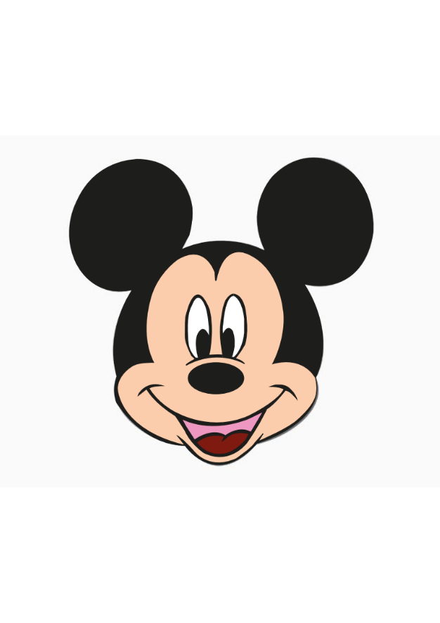
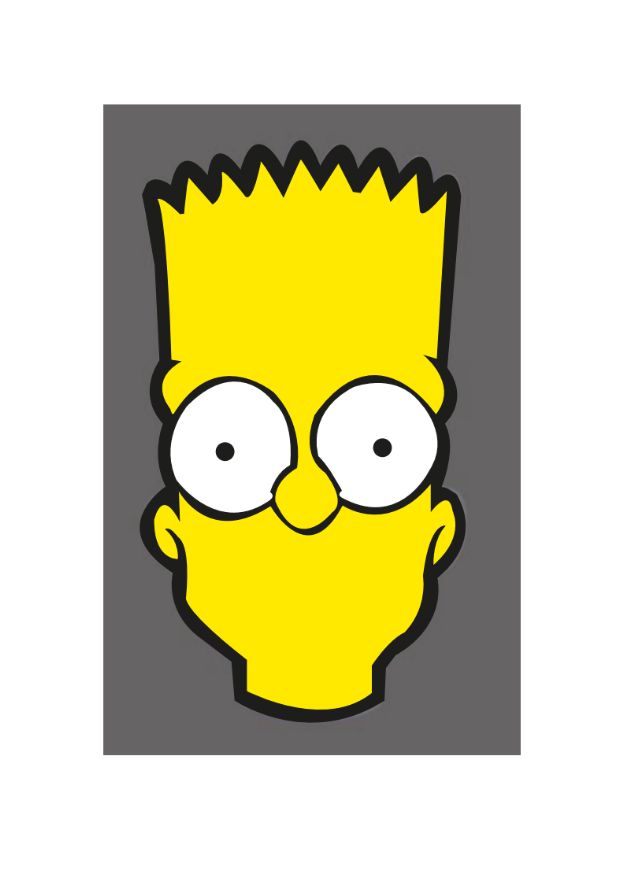

Participación 1: Panel Buscatrazos o Pathfinder
En esta participación elaboré un documento digital en el que expliqué cada una de las herramientas del panel Buscatrazos (Pathfinder) de Adobe Illustrator e incorporé ejemplos sobre la función de cada una.
El panel Buscatrazos permite combinar, recortar y modificar figuras vectoriales. Herramientas como Unir fusionan formas; Menos Frente y Menos Fondo eliminan partes de los objetos; mientras que Intersecar y Excluir trabajan con las áreas compartidas entre figuras. Otras opciones como Dividir, Recortar, Combinar, Cortar Contorno y Contornear ayudan a crear diseños más precisos y creativos de forma rápida y sencilla.
Aprendí que estas herramientas facilitan la edición de objetos vectoriales y permiten elaborar diseños profesionales con mayor rapidez, organización y precisión.

Práctica 4: Mickey Mouse
En esta actividad utilicé el panel Buscatrazos (Pathfinder) y la herramienta Pluma de Adobe Illustrator para recrear a Mickey Mouse. Con el panel Buscatrazos combiné y recorté figuras, mientras que con la herramienta Pluma tracé los contornos y detalles del personaje. Esta práctica me permitió mejorar el manejo de herramientas vectoriales y la precisión en el diseño digital.
Aprendí a utilizar estas herramientas para crear, modificar y dar forma a figuras vectoriales con mayor exactitud, comprendiendo cómo ayudan a desarrollar ilustraciones más organizadas y profesionales.

Práctica 5: Bart Simpson
En esta actividad utilicé el software Adobe Illustrator para recrear la ilustración del personaje Bart Simpson. Mediante herramientas de dibujo vectorial elaboré nuevamente sus formas, contornos y colores, cuidando que el resultado fuera lo más parecido posible al diseño original. Esta práctica me ayudó a mejorar el uso de formas, trazos y la edición de objetos para lograr ilustraciones más precisas.
También aprendí a manejar mejor Adobe Illustrator para reproducir ilustraciones vectoriales, aplicando herramientas de dibujo y edición que permiten obtener resultados más organizados y fieles al modelo original de Bart Simpson.